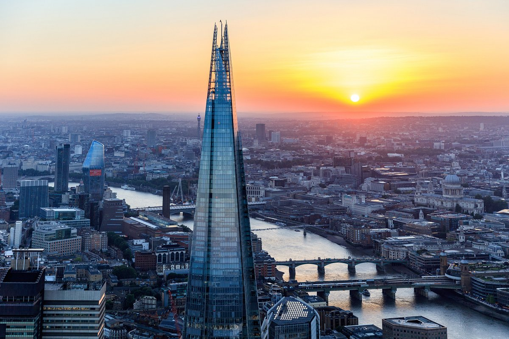
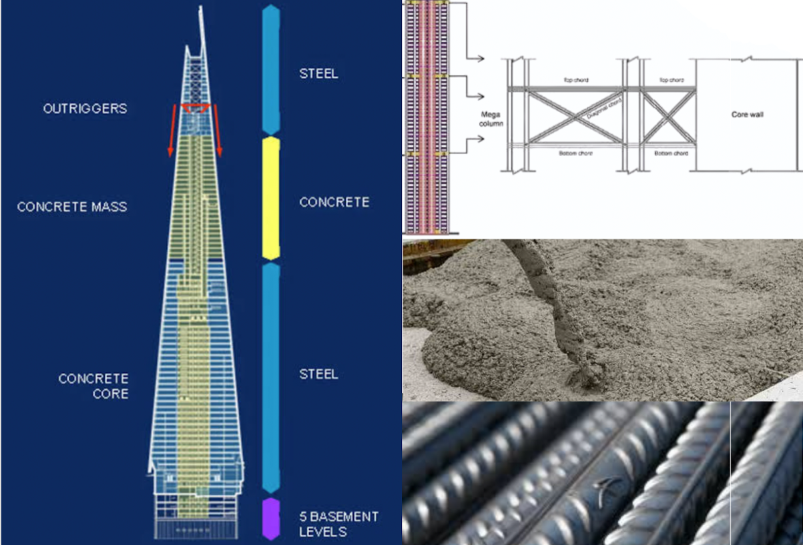

Renzo Piano, an Italian architect, was born in Genoa in 1937 and began designing at a young age. He studied architecture at the Polytechnic University of Milan and the University of Florence before teaching at the Polytechnic University from 1965 to 1968. He worked for Louis Kahn and Zygmunt Stanislaw Makowski. In 1998, he was awarded the Pritzker Architecture Prize. Piano founded the Renzo Piano Building Workshop (RPBW), an international architecture practice based in Paris and Genoa. RPBW, led by 12 partners, has offices in Genoa, France, Paris, and Italy, and has designed and completed around 120 projects since its establishment.
About Renzo Piano
Famous Work: The Shard
The Shard located in London is the 72-story iconic skyscraper designed by Renzo Piano. The structure is 309.6 meters high which is the tallest structure in the United Kingdom. It is a mixed-use skyscraper consisting of offices and residential and retail spaces. The slender and pyramidal form of the tower radiates into a spide. It is composed of eight sloping glass facades.
The design of the spire structure is energy efficient, heat and power plant, and operates on natural gas. The fuel is converted into electricity for all the levels of the structure and the recovered heat provides hot water.

Materials Used

The Shard is an unusual mixture of concrete and steel, a tiered wedding cake of a building with a concrete basement, structural steel from ground to level 40, concrete from levels 41 to 69, and steel again from there to the top at level 95. The whole structure is given stability by a massive concrete core that is placed in the middle of the building.